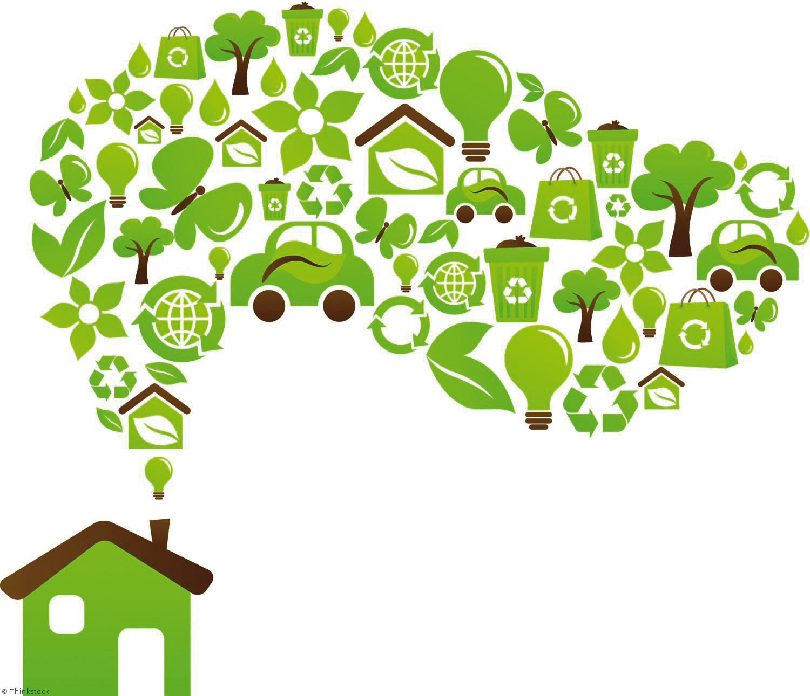

Em mais pesquisas sobre sustentabilidade encontramos um artigo que sugere varias ideias para o desenvolvimento sustentável para nossas cidades e também aplicações para o uso domestico e em nossas empresas, vale apena conferir.
Sugestões para o desenvolvimento sustentável:
- Reciclagem de diversos tipos de materiais: reciclagem de papel, alumínio, plástico, vidro, ferro, borracha e etc.
- Coleta seletiva de lixo.
- Tratamento de esgotos industriais e domésticos para que não sejam jogados em rios, lagos, córregos e mares. Nossas empresas de remanufatura de cartuchos e toners também devemos nos preocupar com o descarte de nossa matéria prima, pois as mesmas são prejudicais ao meio ambiente;
- Descarte de baterias de celulares e outros equipamentos eletrônicos em locais especializados. Estas baterias nunca devem ser jogadas em lixo comum;
- Geração de energia através de fontes não poluentes como, por exemplo, eólica, solar e geotérmica.
- Substituição, em supermercados e lojas, das sacolas plásticas pelas feitas de papel.
- Uso racional (sem desperdício) de recursos da natureza como, por exemplo, a água.
- Diminuição na utilização de combustíveis fósseis (gasolina, diesel), substituindo-os por biocombustíveis.
- Utilização de técnicas agrícolas que não prejudiquem o solo.
- Substituição gradual dos meios de transportes individuais (carros particulares) por coletivos (metrô).
- Criação de sistemas urbanos (ciclovias) capazes de permitir a utilização de bicicletas como meio de transporte eficiente e seguro.
- Incentivo ao transporte solidário (um veículo circulando com várias pessoas).
- Combate ao desmatamento ilegal de matas e florestas.
- Combate à ocupação irregular em regiões de mananciais.
- Criação de áreas verdes nos grandes centros urbanos.
- Manutenção e preservação dos ecossistemas.
- Valorização da produção e consumo de alimentos orgânicos.
- Respeito às leis trabalhistas.
- Não utilização de mão-de-obra infantil e trabalho escravo.
- Uso da Gestão Ambiental nas indústrias, empresas prestadoras de serviços e órgãos públicos.
- Implantação, nos grandes centros urbanos, da técnica do telhado verde.
-Remanufatura de seus cartuchos e toners com isso diminuem o descarte de plástico e eletrônico.
"Duas coisas são infinitas: o universo e a estupidez humana. Mas, em relação ao universo, ainda não tenho certeza absoluta."
- Albert Einstein